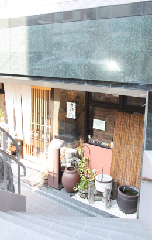
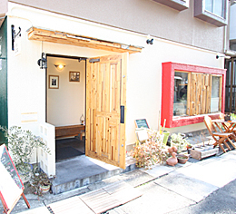

名古屋市千種区を中心に、マンション・土地・新築・中古一戸建など
豊富な不動産物件情報を掲載しています。不動産の査定もお気軽にご相談下さい。


-
とってもリーズナブルに抑えられたお手軽メニューと家族的な暖かさがあるお店の雰囲気がとても心地よく感じます。
大人数で行ける店なので、宴会にも使えて大変便利です。
鳥謹（鳥料理）
●TEL 052-781-1392
●愛知県名古屋市千種区清住町3-84
●営業時間／11:30〜14:00 17:00〜21:00
●定休日／水曜日

-
東山公園近くの閑静な住宅街に位置するおそば屋さん。
とても上品で清潔な感じが魅力のお店の佇まい。
味付けはスッキリとみずみずしい感じで、大人の美味しさ、という表現が合う美味しいお蕎麦を食べさせてくれます。
ふ〜助（そば屋）
●TEL 052-782-2266
●愛知県名古屋市千種区唐山町3-6
●営業時間／11：30〜15：00 17：00〜20：00
●定休日／月曜日（祝日の場合は翌日）
-

-
ランチコースは、このステーキをこんな値段で？
と思えるほどリーズナブル。
脂の少ない柔らかい上質なお肉が使われ、本当に美味しく頂けます。
テイクアウトも出来るので自宅で味わうのもOK。
お店の雰囲気もよくお勧めなステーキ屋さんです。
炭焼ステーキ三六 （すみやきすてーき みろく）
●TEL 052-782-8488
●愛知県名古屋市千種区唐山町3-40
●営業時間／11:30〜15:00 17:00〜22:30
●定休日／火曜日

-
サッパリとした味付けに薄めの皮がとてもおいしいお好み焼き屋さん。
テイクアウト専門です。
石川屋（お好み焼き）（お持ち帰りのみ）
●TEL 052-781-1606
●愛知県名古屋市千種区東山通４丁目１２
●営業時間／11:00〜17:00

-
明るくきれいな店内で、職人気質に溢れたマスターが料理を振る舞ってくれます。
店内のセンスがよく調理の味も逸品！
人気店ですが、一人で切り盛りしているので、満席のとき等は少々待たされる事もありますが、それでも何度も通いたくなるおいしい洋食屋さんです。
trentotto （トレン・トット／洋食）
●TEL 052-783-1138
●愛知県名古屋市千種区新池町4-57-1 ぺガースビル １Ｆ
●営業時間／11：30〜14：30（ラストオーダー）
※状況により14：00までの場合あり。
18：00〜23：00(ラストオーダー22：00)
●定休日／水曜日＆毎月１回連休あり
-
